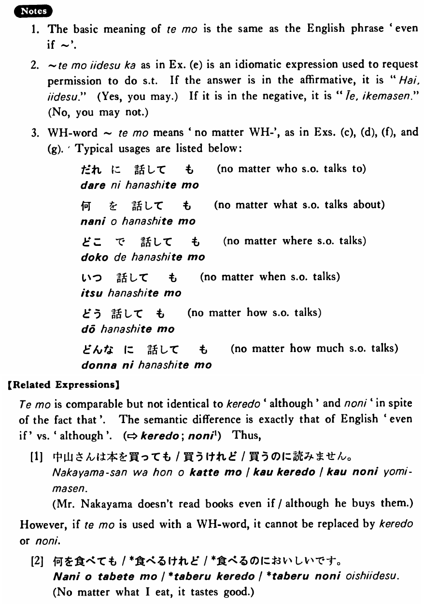

←
DoJG
→
ても
(B. 468)
Example sentences
(ksa).
私は雨が降っ
ても
行く・行きます。
I'll go there even if it rains.
(ksb).
私は寒く
ても
出かける・出かけます。
I'll go out even if it is cold.
(ksc).
僕がトム
でも
同じことをしただろう・でしょう。
Even if I were Tom, I would probably have done the same thing.
(a).
中山さんは本を買っ
ても
読みません。
Mr. Nakayama doesn't read books even if he buys them.
(b).
私は四時間歩い
ても
疲れなかった。
I didn't get tired although I walked for four hours.
(c).
何を食べ
ても
美味しいです。
No matter what I eat, it tastes good.
(d).
誰に聞い
ても
分からなかった。
No matter who I asked, I couldn't get the answer.
(e).
A:煙草を吸っ
ても
いいですか。 B:はい、いいです。
A: May I smoke? B: Yes, you may.
(f).
どんなに日本語が難しく
ても
やってみます。
No matter how difficult Japanese may be, I will try it.
(g).
どんなに丈夫
でも
体には気をつけた方がいい。
No matter how healthy you are, you’d better take good care of yourself.
(h).
井上さんが先輩
でも
僕ははっきり言うつもりだ。
I intend to speak straightforwardly, even if Mr. Inoue is my senior.
Formation
(i)
{V/Adjective(い/な)} て
も
話し
ても
Even is someone talks
食べ
ても
Even if someone eats
高く
ても
Even if it is expensive
静か
でも
Even if it is quiet
(ii)
Noun
でも
先生
でも
even if someone is a teacher
